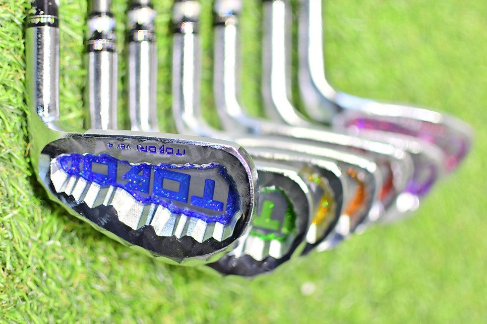
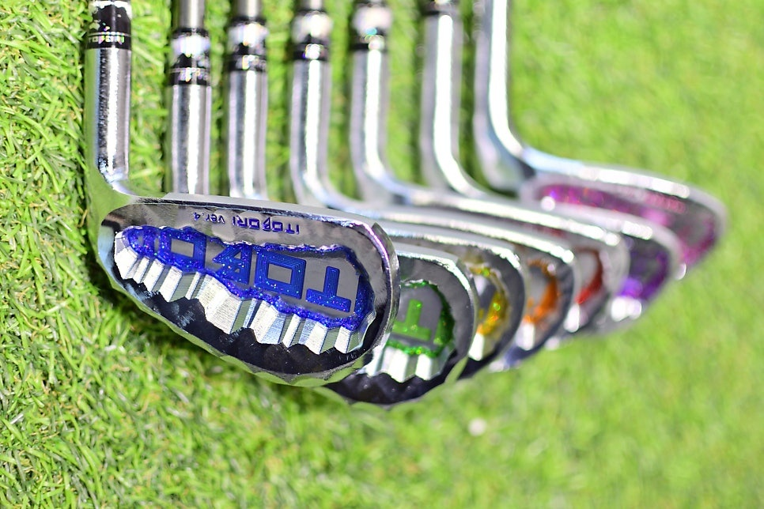
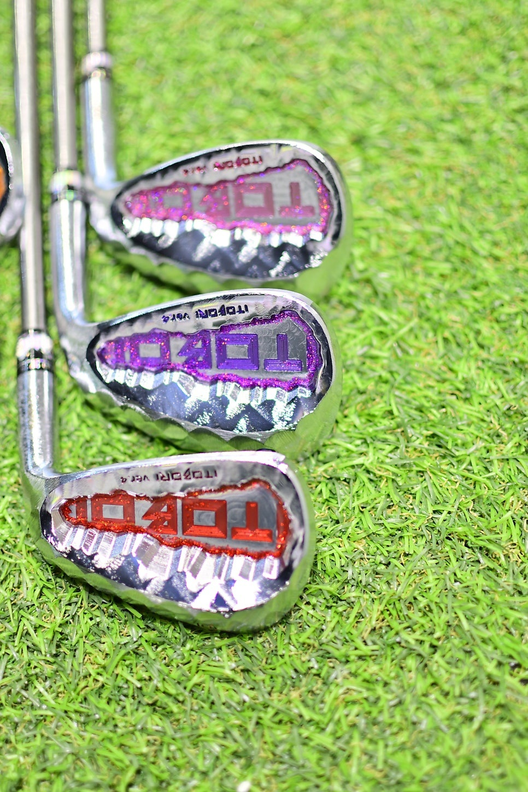
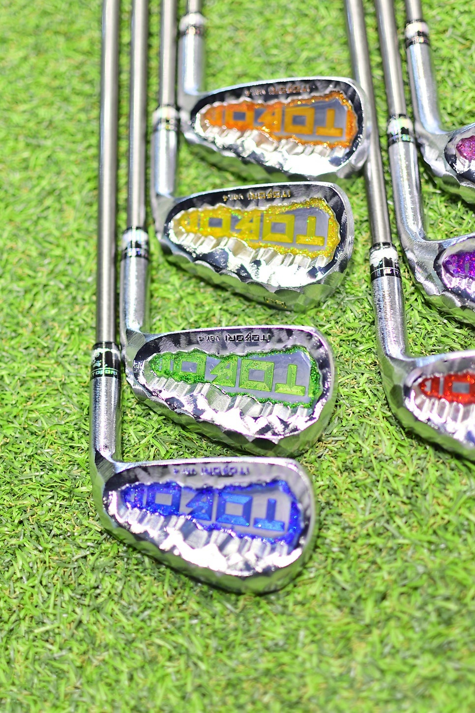
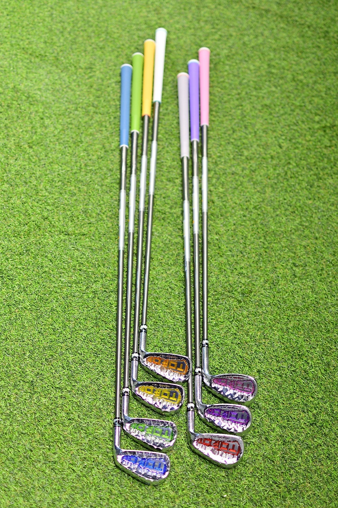
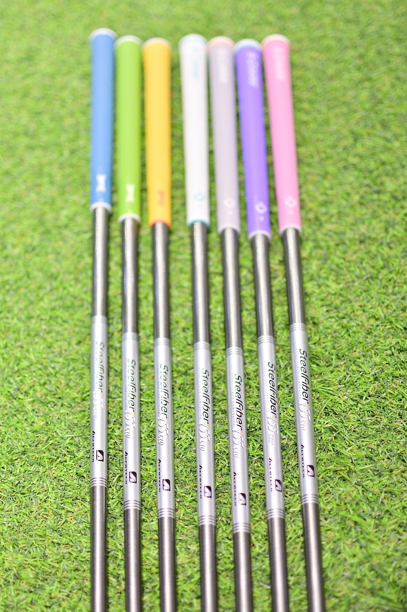
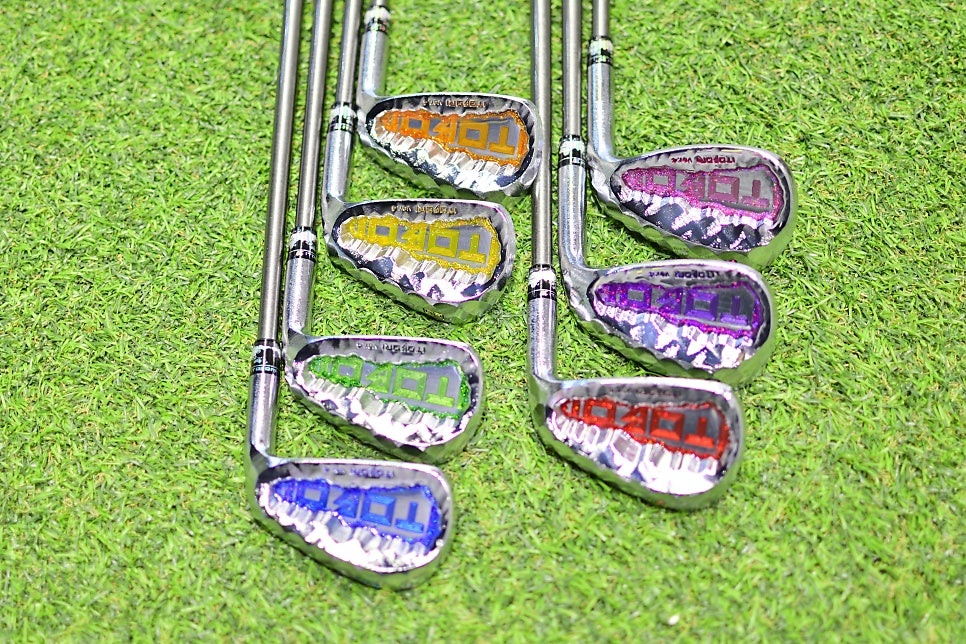
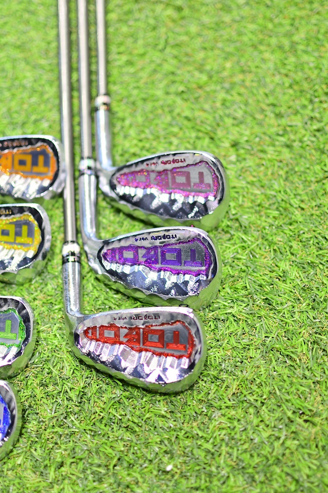
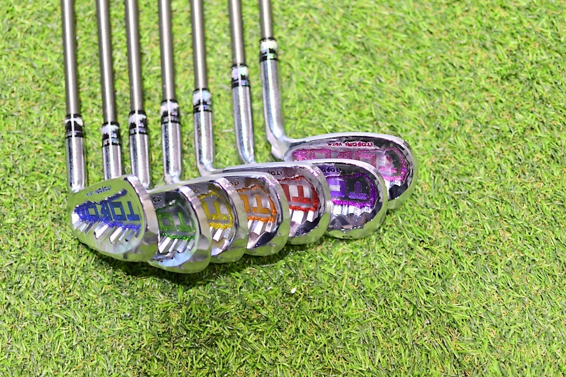

BR GOLF JOURNAL / IRON FITTING
이토보리 여성 골퍼를 위한 아이언, 나만의 컬러로 완성하는 피팅
반짝이는 헤드와 산뜻한 컬러 그립.
눈길을 끄는 디자인에서 시작해, 내 스윙에 맞는 세팅까지.

안녕하세요. 바른골프피팅센터 동래점입니다. 오늘은 사진 속 다채로운 색감이 인상적인 이토보리 아이언을 소개합니다. 클럽을 고를 때 디자인도 놓치고 싶지 않은 여성 골퍼라면, 헤드부터 그립까지 이어지는 컬러 조합을 눈여겨보세요.
클럽마다 다른 색, 하나의 세트로 이어지는 개성
블루와 그린, 옐로와 오렌지, 레드와 퍼플, 핑크까지. 사진 속 아이언은 헤드 뒷면에 서로 다른 컬러 포인트가 들어가 있습니다. 은빛 표면과 선명한 색이 만나 클럽마다 다른 표정을 보여줍니다.
헤드 뒷면의 굴곡진 표면은 빛을 받는 각도에 따라 반짝임이 달라 보입니다. 전체 구성 사진과 가까이 촬영한 사진을 함께 보면 그 차이를 더 잘 느낄 수 있어요.




그립에도 담은 나만의 취향
헤드뿐 아니라 그립에도 다채로운 색상이 적용되어 있습니다. 블루, 그린, 옐로와 부드러운 파스텔 톤이 어우러져 세트 전체가 산뜻하게 느껴집니다. 골프백에서 클럽을 꺼내는 순간에도 나만의 취향을 즐길 수 있는 조합입니다.
그립을 고를 때는 색상과 함께 손에 쥐었을 때의 두께, 질감, 편안함도 확인해 보세요. 보기 좋은 조합에 실제로 잡기 편한 감각까지 더해져야 오래 만족하며 사용할 수 있습니다.


여성용 아이언 피팅, 내 스윙을 기준으로
여성 골퍼라고 해서 모두 같은 무게와 강도의 클럽이 맞는 것은 아닙니다. 스윙 템포와 체력, 익숙한 클럽의 감각, 원하는 샷이 사람마다 다르기 때문입니다. 디자인을 마음에 담았다면 다음은 직접 휘둘러 보며 나에게 맞는 조합을 살펴볼 차례입니다.
- 전체 무게와 길이: 준비 자세부터 피니시까지 편안하게 움직일 수 있는지 살펴봅니다.
- 샤프트의 느낌: 스윙할 때의 무게감과 휘어지는 감각을 비교합니다.
- 그립의 두께와 촉감: 과하게 힘을 주지 않고 안정적으로 쥘 수 있는지 확인합니다.
- 클럽별 거리 간격: 테스트 샷을 통해 클럽 사이의 거리와 탄도 차이를 확인합니다.
사진만으로 샤프트의 정확한 무게·강도나 헤드의 로프트를 판단하기는 어렵습니다. 구체적인 구성은 제품 사양 확인과 상담, 시타를 거쳐 결정하는 것이 좋습니다.

가까이 볼수록 더해지는 디테일
전체 사진에서는 컬러의 조화를, 가까이 촬영한 사진에서는 헤드의 표면과 장식을 살펴볼 수 있습니다. 어떤 컬러가 가장 마음에 드시나요? 선호하는 디자인과 현재 사용하는 클럽에서 느끼는 점을 함께 정리해 오시면 상담을 시작하기 좋습니다.


나를 닮은 디자인, 나에게 맞는 세팅
좋아하는 컬러를 담은 클럽은 골프를 즐기는 또 하나의 즐거움이 됩니다. 여기에 내 스윙과 어울리는 세팅까지 더해진다면 더욱 만족스러운 선택을 준비할 수 있겠죠.
이토보리 아이언이 궁금하시다면 바른골프피팅센터 동래점에서 상담해 보세요. 원하는 디자인, 현재 클럽의 불편함, 평소 플레이 스타일을 함께 이야기해 주세요. 제품 구성과 상담 가능 여부는 방문 전 전화(0507-1390-5980)로 확인해 주세요.
피팅 상담 내용 준비하기 ↗VISIT BR GOLF
바른골프피팅센터 동래점 오시는 길
- 주소
- 부산시 동래구 사직북로4 삼정자이언츠파크 2층 210호
- 문의 전화
- 0507-1390-5980 ↗
- 주차 안내
- 지하 2층 · 지하 3층 무료 주차
건물 2층 210호로 방문해 주세요.
피팅 상담과 방문 문의는 전화로 연락해 주세요.
삼정자이언츠파크 · 2층 210호
원하는 지도에서 출발지를 입력해 길찾기를 시작하세요.
사진 속 제품 외관을 바탕으로 작성한 소개 글입니다. 정확한 모델명, 소재, 샤프트 사양, 가격 및 재고는 별도 확인이 필요합니다.